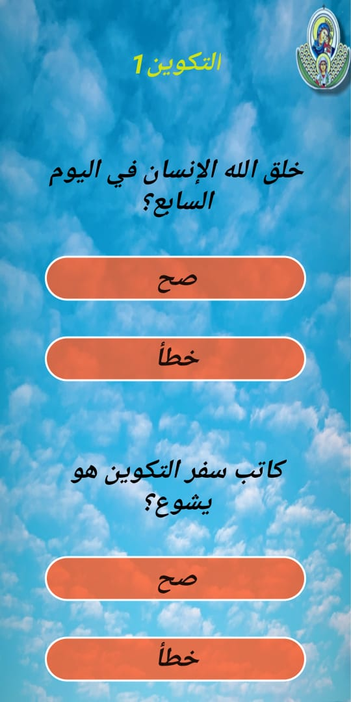

St.demaina apk
screen shoots


download now
اهداف البرنامج
1- يستهدف البرنامج الفئة العمرية ١٢-٢٠ سنة
2- تسهيل الخدمة في ظل جائحة كورونا
3- جعل الخدمة وقت ممتع للتنافس بين المخدومين والخدام
تم انشاء البرنامج بواسطة:
المخدومين:
بيشوى يسرى
كيرلس بشري
مايكل وليد
توني ميخائيل
ماثىو مجدى
ابانوب جرجس
تحت اشراف الخدام:
مينا عادل
هايدي وجدي